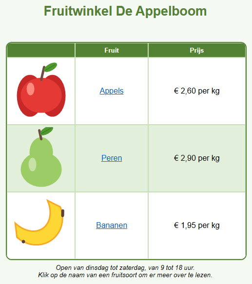

Leerpad › Les 8
Van ontwerp naar website
.html), de HTML-code
begrijpen en een bewaarde pagina later opnieuw openen om verder te werken.
Ontwerp of webpagina?
| Bestand | Wat is het? | Openen met |
|---|---|---|
.htd | Je ontwerp, om verder aan te werken. | Advanced Html Designer |
.html | De webpagina, zoals bezoekers ze zien. | elke webbrowser (en ook de designer) |
De HTML-code bekijken
Klik onderaan op Klik hier voor extra functies. Het rolluik heeft twee tabbladen:
- Html-Document: de volledige webpagina, met de tekstblokken en de pagina-instellingen.
- Html-Tabel: alleen de tabel, om in een bestaande webpagina te plakken.
De belangrijkste onderdelen van de code:
| Code | Betekenis |
|---|---|
<table> | begin van de tabel (</table> is het einde) |
<tr> | een rij (table row) |
<td> | een cel (table data); colspan en rowspan voor samengevoegde cellen |
style="..." | de opmaak: kleuren, randen, uitlijning, lettergrootte |
<a href="..."> | een hyperlink |
<img src="..."> | een afbeelding; de afbeelding zelf zit in de code ingebouwd (data:image/png...) |
<div class="designer-textblock"> | een tekstblok |
Zo maak je er een webpagina van
- Open het voorbeeld (of je eigen ontwerp) en klap het rolluik open.
- Klik op het tabblad Html-Document op
 Bewaar HTML Document.
Bewaar HTML Document. - Kies een map en een naam, bijvoorbeeld
fruitwinkel.html. - Dubbelklik in de Verkenner op het bestand: het opent in je webbrowser. Klik op de links om ze te testen.
Omdat de afbeeldingen in de code ingebouwd zijn, is je webpagina één bestand. Je kunt het mailen, op een
USB-stick zetten of op een website plaatsen. Bij veel webhosts moet de startpagina index.html heten.
Je webpagina als PDF
Wil je je werk afdrukken of doorsturen? Klik in het rolluik, op het tabblad Html-Document, op PDF (Bewaar als PDF) en kies een naam. De PDF krijgt het papierformaat van de pagina (tabblad Instellingen) en ziet er hetzelfde uit als in de test-browser: met kleuren, afbeeldingen, tekstblokken en klikbare links. Een lange tabel loopt door op een volgende pagina.
Een webpagina opnieuw openen
Een .html-bestand dat je met Bewaar HTML Document bewaard hebt, bevat onzichtbaar ook je volledige
ontwerp. Open het met  Openen tabel designer en je kunt gewoon
verder werken, ook zonder het
Openen tabel designer en je kunt gewoon
verder werken, ook zonder het .htd-bestand. Meer daarover in Bestanden & export.
Opdracht
Bewaar het voorbeeld als fruitwinkel.html en open het in je browser. De bananen worden goedkoper: ze kosten
nu € 1,75 per kg. Pas de prijs aan in de designer, bewaar de webpagina opnieuw en vernieuw je browser
(F5). Zoek daarna in de HTML-code het adres van de link achter Bananen.
Oplossing
Klap het rolluik dicht, dubbelklik in de designer op de prijs van de bananen en typ de nieuwe prijs. Klap het rolluik
weer open, klik op Bewaar HTML Document en kies hetzelfde bestand: het oude wordt vervangen. Druk in de browser op F5 en je ziet de
nieuwe prijs. In de code staat de link als <a href="https://nl.wikipedia.org/wiki/Banaan">Bananen</a>.
Werk je onder Linux? Open het voorbeeld dan zelf met Openen tabel designer: map
lessen, bestand les08-fruitwinkel.htd.